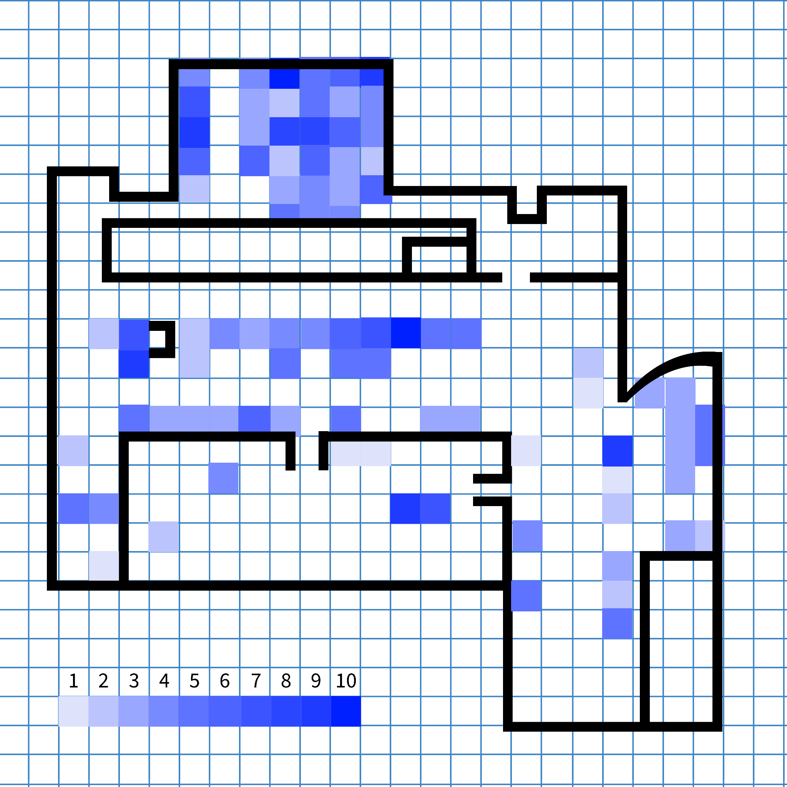
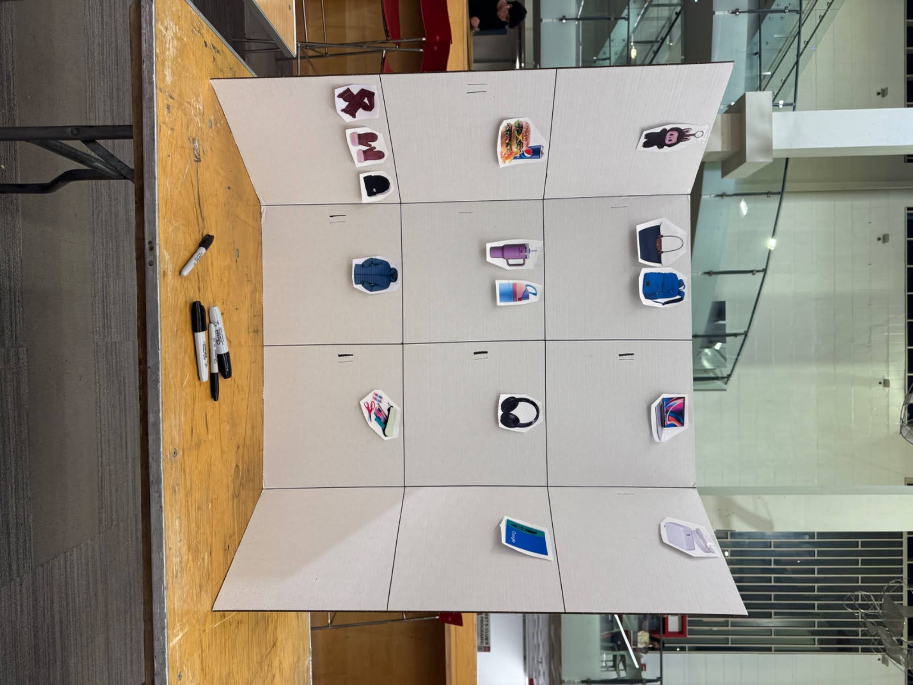

Instruction Sets for Strangers
For this project we started by mapping how many items students bring into Curry. That research evolved into an interactive public tally board that invites strangers to record what they are carrying and reflect on their relationship to their belongings.
Mapping an Experience
What did you decide to map and why?
We decided to map the number of items that each person had on their table or in their workspace on the first floor of the Curry Student Center. We went around the first floor noting down objects such as devices, jackets, headphones, drinks, backpacks, food, etc. We wanted to see how different people organized their workspaces and whether students tended to bring less or more essential items with them when studying.
Whose story are you telling with your map and whose story are you not telling?
With our map, we tell the story of how many objects Northeastern students use while they sit in Curry. Seeing what they bring, reflects on their organizational skills, whether they lean towards minimalism or maximalism, and how they run their work flow. However, the story not told is what people are actually working on or doing while they sit there. This map also does not capture what the objects are. For example, during the winter, people carry more coats and jackets, but the map itself can not tell the seasonal difference.
What problems and opportunities does looking at the NU campus/neighborhood/Boston through your map reveal to us?
Looking at this building’s floor on the NU campus through our map reveals interesting problems and opportunities that are present in academic spaces. For instance, the quantity of items people have with them can point to a growing trend of overconsumption with teens. Also considering Northeastern’s socioeconomic population, the quantity of belongings can highlights students material availability or inequality. Furthermore, the location of people in the Curry Student Center highlights which areas invite people to bring more of their things. The variety of seating options is the main factor. Following this, the amount of things people bring and spread out around them reflects their comfortability and security in this public space. Furthermore, the room map also displays what and how many things academic institutions encourage students to have. This showcases it’s students studying habits and routines. Lastly, the amount of belongings people have is due to the mobility/locality of the Curry building to campus/housing. People most likely bring more because of its proximity to everything.


Objective:
Map the quantity of items students carry to understand organization, minimalism vs. maximalism, and comfort in public spaces.
Key Insights:
Identifying "overconsumption" trends and how seating choice correlates with the amount of belongings (e.g., people with more items sit near walls).
Reflections On Findings From Mapping Experience:
-
People with the greatest number of items were on the outsides of the room/near the walls and people with less things were more in the middle.
- This can point to people’s feeling of security when near the room’s walls and corners.
- The different types of seating in different sections played a role in this too. There is more seating along the walls.
- This could also indicate that people with more things had more work to do and would avoid central areas with more foot traffic.
- The number of belongings correlates to the specific workspace. People with more stuff tend to sit at bigger tables with more space.
- In the first map, there were less total number of people since it was the weekend, but the maps don’t show this.
- People seem to bring a variety of things with them regardless of weekend or weekday.
- One section in map #2 was closed off but didn’t greatly affect the map results.
Instruction Set Proposal
Concept
Our instruction set transforms the mapping research into an interactive installation. We created a large trifold poster placed near the main entrance to the first floor. On it we pasted simple icons of everyday items students are likely to have with them, such as backpacks, laptops, water bottles, headphones, keys, and food from the ground-floor restaurants.
When people recognize an item they have on them, they add a tally under that icon. Blank columns and empty areas invite people to sketch their own items, expanding the set of categories as the day goes on.
Enticing strangers
The board relies on visual curiosity instead of written instructions. Bright images and scattered icons signal that it is playful and open-ended, while existing tallies show that others have already participated and more are welcome to join.
How people interact
People interact both directly and indirectly. Friends can stop, compare how many items they carry, and add tallies together. Strangers interact through the marks left behind, reading the board as a snapshot of how many laptops, coffees, or backpacks pass through Curry in a single hour.
What people take away
The installation invites people to notice what they consider essential in an academic space and how that compares to everyone else. It also raises questions about overpacking, comfort, status, and habits. Participants can see whether they travel light or bring a small ecosystem of belongings, and may reconsider what they carry into shared spaces like Curry.
Iteration 1
Setup
Logisitics: Thursday, 5:25–6:25 PM (Busy time due to Entrepreneurship Club event).
Location: In front of stairs leading to 1st floor
Hypothesis: People will be enticed by the social aspect of seeing others' tallies.
What happened
- Many people walked past without noticing the board at all.
- Those who stopped were sometimes confused about whether they were tallying ownership or preference.
- Hyper-specific labels (like particular bottle brands) made decisions feel slower and more awkward.
Interview Notes:
- A participant who engaged but struggled with the specific mechanics of the task. The design needs to shift the visual language from "preferences" to "inventory" to lower the cognitive load.
- An observer near the stairs who failed to engage with the board. The "Cue" must be unavoidable and active; placement needs to disrupt the user's path, not just sit beside it.

Iteration 2
Key changes
- Moved the board to a table directly in front of the entrance so people naturally faced it as they arrived.
- Reframed the prompt from “What do you like?” to “What do you have?” by adding a large central drawing of a backpack with arrows.
- Played inviting music to make the area feel like a small event rather than a static poster.
- Switched to Friday afternoon (less busy, but potentially more relaxed users).
Outcome
Reaction: The backpack picture immediately clarified the concept
Social Proof: People saw others participating and joined in; the placement caught attention without being obstructive.
Outcome: Higher participation and less confusion about the objective.
Interview Notes:
- A user who relied on social cues rather than visual instructions. Momentum breeds momentum; the design should encourage clustering because people attract people.
- A participant who misunderstood the scope of the data collection. Explicitly clarify that the prompt is personal ("What is in your bag?") and visual permissions (like bigger boxes) should signal that multiple inputs are allowed.
- A successful interaction driven by the new visual anchor. Visual anchors (icons) are faster than text, and sensory elements (sound) are key to transforming a passive task into an active experience.
CREATE Action Funnel Analsis
1. Cues
In Iteration 1, the poster was by the stairs, causing a "leak" where users "didn't notice it much". In Iteration 2, we moved it to a table "right in front of the stairs" at the entrance, ensuring the cue was unavoidable.
2. Reaction
Iteration 1 had a "boring look" which failed to trigger a positive reaction. Iteration 2 used a backpack graphic and the sight of other people (social norms) to create a safe, interesting invitation.
3. Evaluation
Iteration 1 had high cognitive costs because users were "confused on whether to mark things she liked" or had. Iteration 2 lowered this cost by using the backpack drawing, which helped users immediately "figure out the concept" without complex mental effort.
4. Ability
In Iteration 2, seeing others interacting served as an instructional demo, removing the barrier of not knowing what to do, although some confusion about "multiple tallies" remained.
5. Timing
Paradoxically, the "busier" time in Iteration 1 resulted in less action (too much distraction/urgency to be elsewhere). The "less busy" Friday slot allowed users the mental timing to pause and engage.
If We Had One More Week
If we had one more week to iterate, our focus would shift from capturing attention (which we successfully solved in Iteration 2) to refining the Ability and Evaluation stages of our Action Funnel. While our backpack icon successfully signaled the project's theme, user feedback revealed a lingering friction: participants were unsure if they could tally multiple items or if they were merely guessing at general student trends.
To resolve this, we would redesign the interface. Instead of one poster board, we would deploy a series of smaller, distinct posters for each item category (e.g., a dedicated "Laptop" board, a "Water Bottle" board). This physical separation would visually prompt users to treat each category independently, implicitly giving them permission to tally all their items rather than selecting just one.
Operationally, we would combine the "active" placement of Iteration 2 with the "high-traffic" timing of Iteration 1 (Thursday evening). We would also implement the specific participant request for louder music. By combining a clearer UI with a more energetic auditory cue, we could transform the installation from a passive data board into a high-energy community event that commands attention even during peak rush hour.
Furthermore, more colors, words, and symbols could also be used to encourage people’s full participation. Spreading out each individual category board could also allow participants to focus on one category at a time, understanding that they could tally more than one category.